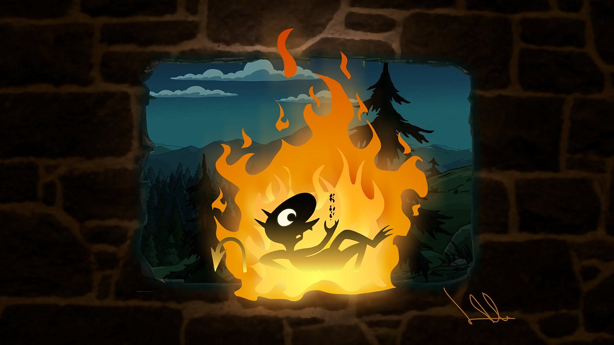

About Luci
Luci is the deuteragonist in Disenchantment. He lives in Dreamland, is Princess Bean's "personal demon", and is the owner and bartender at Luci's Inferno. He is a demon from Hell who has been magically summoned by the Enchantress and Emperor Cloyd of Maru to act as their "emissary". He is presented to Bean in the form of a wedding gift.
Luci's characteristics
- Traditional demon - pure evil
- Loves beer
- Chaotic neutral
- Acts like a cat
- Uber-demon level four - was for a few minutes
- Likes his friends